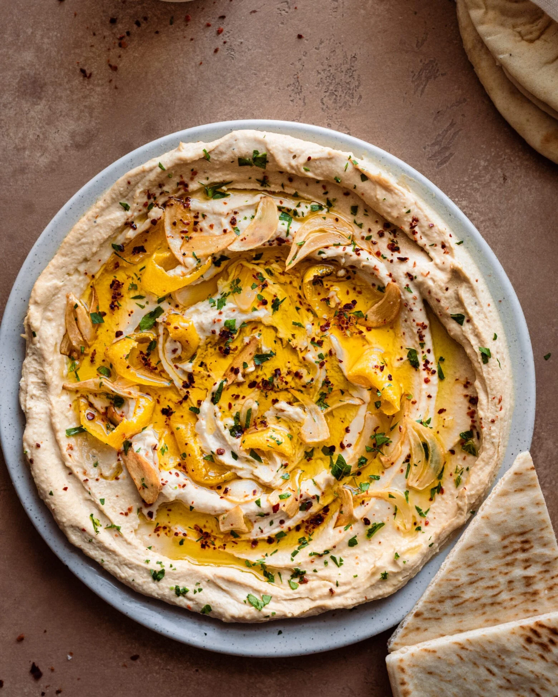

How to Make Amazing Hummus at Home
Ingredients
Instructions
- In a food processor, combine chickpeas, lemon juice, and tahini. Process until smooth.
- Scrape down the sides of the bowl and add garlic, olive oil, cumin, and salt. Process until well blended and smooth.
- If the hummus is too thick, add water a tablespoon at a time until the desired consistency is reached.
- Transfer to a serving bowl and drizzle with additional olive oil. Garnish with chopped parsley.
- Serve with pita bread or vegetables.